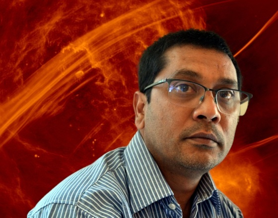

Lecturers
Lecturers
Our lecturers and organising committee for AI, Uncertainty & Simulation 2026.
 A.H
A.H
Lecturer.
Prof. Alan Heavens
Imperial College London (ICL)
 A.J
A.J
Lecturer.
Prof. Andrew Jaffe
Imperial College London (ICL)
 B.B
B.B
Lecturer.
Prof. Bruce Bassett
Wits University & University of Cape Town (UCT)

N.OLecturer.
Dr. Nadeem Oozeer
SARAO
Organising Committee
- Robert Lees (WITS)
- Linda Camara (WITS)
- Daniesha Govender (WITS)